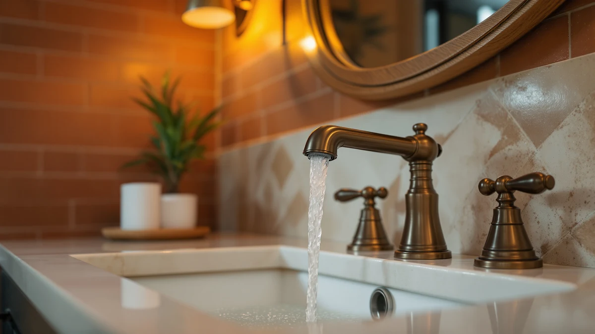

The Best Widespread Sink Faucets (2026)
Prices and picks verified as of September 2026. Independent, reader-supported reviews.


Quick Answer
The Delta Dryden Brushed Gold is our top pick among the best widespread sink faucets for 2026, pairing DIAMOND Seal Technology rated for roughly twice the cycle life of a standard valve with a wrench-free quick-connect install. If the $406.22 price sits above your budget, the Delta Nicoli Matte Black at $185.20 delivers the same brass durability in a more affordable widespread body, and the FORIOUS two-pack starts at $53.99 for anyone furnishing more than one bathroom.
Our pick: Delta Dryden Brushed Gold Bathroom — $406.22 Check Price on Amazon
Bottom line: our top pick is the Delta Dryden Brushed Gold Bathroom Faucet 3 Hole at $360.99. The best budget option is the FORIOUS 2 Pack Black Bathroom Faucets at $69.99.
Things to Know Before You Buy
- Widespread means three separate holes. A true widespread faucet needs three holes, one for each handle plus the spout, spaced anywhere from 4 to 16 inches apart depending on the model, which is why the best widespread sink faucets in this guide vary in their minimum spacing.
- Finish changes the price more than function does. Champagne bronze and matte black, like the Delta Dryden and Nicoli here, cost more mainly because of the finish, not because the underlying brass hardware works differently.
- Valve rating tells you how long a faucet will last. A cartridge or ceramic disc valve rated for 500,000 cycles is the benchmark to look for, and the Delta Dryden's DIAMOND Seal design goes further by cutting the number of leak points.
- Not every pick here is true widespread. The FORIOUS budget option is a 4-inch centerset design rather than widespread, so measure your sink's hole spacing before you buy, no matter which faucet you choose.
The best widespread sink faucets solve a specific fitting problem: three separate holes, spaced anywhere from 4 to 16 inches apart, that a single-hole or centerset faucet simply cannot cover. Most bathrooms built in the last few decades use this three-hole layout, and the faucet you pick has to match both the spacing already drilled into your sink and the water pressure and finish you want to live with for the next decade. We compared seven widespread faucets from Delta, Pfister, and FORIOUS on brass construction, valve life, and finish durability to find picks that hold up past the return window.
After comparing brass construction, installation hardware, and valve cartridge ratings across all seven, the Delta Dryden Brushed Gold Bathroom faucet is our top pick at $406.22. Its DIAMOND Seal valve is rated for roughly twice the cycle life of a standard cartridge, and Delta backs it with a quick-connect installation system that clicks audibly once the water lines are seated correctly. If that price sits outside your budget, the Delta Nicoli Matte Black covers similar brass durability for $185.20, and the FORIOUS two-pack starts at $53.99 for anyone furnishing more than one bathroom.
The rest of this guide walks through the full field: a matte black runner-up, two Delta finishes with pull-down sprayers, a lever-handled gold option, a chrome Pfister pick built around water-saving hardware, and the FORIOUS budget option, which uses centerset spacing rather than true widespread and is worth a second look before you buy. Whatever hole spacing your vanity was drilled for and whatever finish your bathroom calls for, one of these seven fits.
Why You Should Trust Us
The editorial team at Best Bathroom Faucets, led by home and bath writer Ilane Tall, put together this guide by comparing the widespread sink faucet listings available on Amazon right now. For each product we read through the manufacturer specifications, brand warranty terms, and verified buyer feedback rather than relying on marketing copy alone.
We are an affiliate site and earn a commission when you buy through our links, and that arrangement never changes which faucets we recommend or how we describe their drawbacks. When a pick has a real limitation, like the FORIOUS budget faucet's centerset spacing instead of true widespread, we say so directly instead of glossing over it.
How We Picked
We started by narrowing the field to faucets built for the three-hole widespread configuration, since that is the mounting style most homeowners need to replace when shopping for the best widespread sink faucets for an existing vanity.
Brass construction and valve rating came first. We prioritized faucets built on brass bodies with cartridge or ceramic disc valves rated for 500,000 cycles or more, which is the spec that separates a faucet that lasts a decade from one that starts dripping within a year or two.
Installation hardware mattered next. Every Delta faucet in this guide uses the brand's wrench-free, quick-connect supply lines, which click audibly once properly seated and cut installation time compared to faucets that still require a basin wrench.
We also included one centerset option from FORIOUS, because shoppers researching the best widespread sink faucets sometimes discover their sink is actually drilled for centerset spacing, and a budget option that covers that case belongs in this guide even though it is not technically widespread.
How We Compared
We are upfront about our method: this is a research-driven comparison of widespread sink faucets, not a hands-on lab test, and we will not pretend otherwise. We did not install all seven faucets on a bench in a workshop. Instead, we compared each one the way a careful shopper would, lining up brass construction, valve cycle ratings, hole spacing, and a large body of verified owner reviews side by side.
For the Delta lineup, we weighed the DIAMOND Seal and standard cartridge valve ratings against installation hardware and finish to see which combination held up best for the price. For the Pfister and FORIOUS picks, we compared water-saving hardware, ceramic valve claims, and what verified buyers report about fit and finish durability. Across every pick, we cross-checked the listed price against the current Amazon price so the numbers in this guide reflect what you would actually pay as of August 2026.
Our Picks

Delta Dryden Brushed Gold Bathroom
What we like
- DIAMOND Seal Technology cuts leak points and is rated for roughly twice the lifespan of a standard cartridge valve
- Quick-connect, wrench-free supply lines click audibly once seated, simplifying a DIY install
- Fits the common 3-hole widespread spacing from 4 to 16 inches, so it works with most existing vanity drillings
- Champagne-bronze finish reads as a warm brushed gold that pairs well with wood vanities and warm-toned tile
Flaws but not dealbreakers
- At $406.22 it costs more than double the next most expensive pick in this guide
- The finish name shifts between "brushed gold" and "champagne bronze" across retailer listings, so confirm the exact tone before you buy
- The premium price buys valve longevity and finish, not extra functionality over the cheaper Delta options here
| Material | Brass + finish |
| Size | (Pack of 1) |
The Delta Dryden earns its price with DIAMOND Seal Technology, a valve design that reduces the number of points where a faucet can eventually leak and is rated for roughly twice the lifespan of a standard cartridge valve. Delta backs the widespread spacing with the same wrench-free, quick-connect installation used across its lineup, so the supply lines click audibly into place without a basin wrench, and the faucet fits the common 3-hole widespread pattern from 4 to 16 inches, which covers most existing vanity drillings without requiring a plumber.
At $406.22, this is the most expensive faucet in our lineup by a wide margin, and it earns that price on valve durability and finish rather than any feature the cheaper Delta options here lack. The champagne-bronze finish reads as a warm brushed gold that pairs well with wood vanities and warm-toned tile, and if your bathroom calls for that tone and you plan to keep this faucet in place for a decade or more, the DIAMOND Seal valve is the spec that justifies the premium over the Nicoli or Broadmoor.

Delta Nicoli Matte Black Bathroom
What we like
- Brass body with a cartridge valve rated for at least 500,000 uses, keeping drips and handle wobble away for years
- Wrench-free, quick-connect installation matches the Dryden's easy setup at less than half the price
- Matte black finish hides water spots and fingerprints better than a polished chrome faucet
- Backed by Delta, a brand with a long faucet warranty track record
Flaws but not dealbreakers
- Matte black shows dust more visibly than a lighter finish under bright bathroom lighting
- At $185.20 it is still a mid-range price rather than a budget option
- The dark finish leans modern, which will not suit every traditional bathroom
| Material | Brass + finish |
| Size | — |
The Delta Nicoli covers the same widespread spacing as the Dryden with a brass body and a cartridge valve rated for at least 500,000 uses, which keeps handle wobble and drips away for years of daily use. The matte black finish also does a better job than polished chrome at hiding water spots and fingerprints between cleanings, and the same wrench-free, quick-connect supply lines make installation straightforward for anyone comfortable with basic DIY plumbing.
At $185.20, it costs less than half the Dryden while matching its wrench-free installation and brass construction, which makes it the strongest value among the Delta faucets in this guide. If you want a modern matte black widespread faucet and do not need the DIAMOND Seal valve's extra cycle rating, this is the more practical buy, and it is the pick we would recommend to most people replacing a dated widespread faucet on a mid-range budget.

Delta Arvo Brushed Gold Bathroom
What we like
- Pull-down sprayer with MagnaTite Docking uses a magnet to snap the sprayer head back into place, so it does not sag over time
- Cartridge valve rated for at least 500,000 uses, matching the Nicoli's durability
- Wrench-free, quick-connect installation fits 3-hole widespread spacing from 6 to 16 inches
- Champagne-bronze finish gives a warm tone at a lower price than the Dryden
Flaws but not dealbreakers
- The wider 6-inch minimum spacing means it will not fit the tightest 4-inch widespread drillings some other Delta picks cover
- A pull-down sprayer adds one more moving part that can eventually wear out compared to a fixed spout
- At $163.71 it is close in price to the Nicoli, so the sprayer is the main reason to choose it over the matte black pick
| Material | Brass + finish |
| Size | — |
The Delta Arvo adds a pull-down sprayer to the widespread format, useful for rinsing toothpaste and hair out of the sink itself rather than relying on the spout alone. MagnaTite Docking uses a magnet to hold the sprayer head snug against the spout, which keeps it from drooping the way some pull-down sprayers do after a year of use, and the cartridge valve carries the same 500,000-use rating as the Nicoli.
At $163.71, it undercuts the Nicoli slightly while adding sprayer functionality, though it needs a minimum of 6 inches between the outer holes rather than the 4-inch minimum some other Delta widespread faucets in this guide support. If your vanity has that clearance and you want the sprayer for easier sink cleanup, the Arvo is worth the small trade-off in spacing flexibility.

FORIOUS 2 Pack Black Bathroom
What we like
- Sold as a two-pack, so the $53.99 price covers faucets for two sinks or two bathrooms at once
- Ceramic disc valves compared for 500,000 cycles, the same durability benchmark as the pricier Delta faucets
- Certified to cUPC and NSF 61 lead-free standards, with rust-resistant nylon braided supply lines
- 360-degree swivel spout gives more coverage at the sink than a fixed spout
Flaws but not dealbreakers
- This is a 4-inch centerset design, not true widespread, so it will not fit a sink drilled for wider three-hole spacing
- FORIOUS does not carry the brand warranty history that Delta and Pfister have built over decades
- Two separate handles for hot and cold take more counter clearance than a single-handle faucet
| Material | Brass + finish |
| Size | Centerset |
The FORIOUS two-pack is the budget pick in this guide, and it comes with an honest caveat: it is a 4-inch centerset design, not a true widespread faucet, so check your hole spacing before you buy. For sinks that are drilled for centerset rather than the wider widespread pattern used by the rest of this list, it is the cheapest option here by a wide margin, and the price covers two complete faucets rather than one.
At $53.99 for two faucets, the price per unit undercuts every other pick in this guide. FORIOUS backs the ceramic disc valves with a 500,000-cycle rating that matches the pricier Delta faucets, and the rust-resistant nylon braided supply lines hold up better than the plain rubber lines found on some low-cost faucets, even though the brand does not have Delta's decades of warranty history behind it. The 360-degree swivel spout also gives more coverage at the sink than a fixed spout.

Delta Broadmoor Matte Black Bathroom
What we like
- Pull-down sprayer with MagnaTite Docking, the same system used on the Arvo, in a matte black finish instead of brushed gold
- Cartridge valve rated for at least 500,000 uses
- Wrench-free, quick-connect installation fits standard 3-hole widespread spacing from 4 to 16 inches
- Matte black hides fingerprints and water spots better than a polished finish
Flaws but not dealbreakers
- At $190.25 it costs slightly more than the Arvo for the same sprayer feature in a different finish
- Matte black shows dust more visibly than lighter finishes in bright bathrooms
- A pull-down sprayer is one more moving part than a fixed-spout design like the Nicoli
| Material | Brass + finish |
| Size | — |
The Delta Broadmoor is essentially the Arvo's pull-down sprayer and MagnaTite Docking system in a matte black finish rather than champagne bronze, and it returns to the wider 4-to-16-inch widespread spacing range that fits more existing vanity drillings than the Arvo's 6-inch minimum. The cartridge valve carries the same 500,000-use rating found across the rest of the Delta lineup here.
At $190.25, it costs a little more than the Arvo, so the choice between the two comes down to finish preference rather than function. If you want the sprayer and prefer matte black to brushed gold, the Broadmoor is the better fit, and it pairs with the same wrench-free, quick-connect installation hardware that makes every Delta faucet in this guide straightforward to install without a plumber.

Pfister Courant 8 in Widespread
What we like
- Built specifically for the 8-inch widespread spread with 3-hole installation, a common vanity drilling
- Meets EPA WaterSense standards, which the brand states cuts water consumption by roughly 30 percent versus a standard faucet
- Push & Seal drain lets you press to open or close the stopper without a separate lift rod
- At $60.27, it is the second-cheapest true widespread faucet in this guide after the FORIOUS centerset
Flaws but not dealbreakers
- Polished chrome shows water spots more readily than the matte or brushed finishes on the Delta picks
- Pfister's cartridge valve rating is not disclosed the way Delta's 500,000-cycle spec is, so it is harder to compare directly
- The traditional styling reads as more classic than modern, which will not fit every bathroom design
| Material | Brass + finish |
| Size | (Pack of 1) |
The Pfister Courant is built specifically around the 8-inch widespread spread, a common three-hole layout, and pairs it with EPA WaterSense certification that the brand states reduces water use by about 30 percent compared to a standard faucet. The Push & Seal drain lets you open or close the stopper with a press instead of a separate lift rod, which simplifies both installation and daily use.
At $60.27, it is the least expensive true widespread faucet in this lineup, well below any of the Delta options and priced close to the FORIOUS centerset pick. The trade-off is a more traditional polished chrome look and a valve durability spec that Pfister does not publish as clearly as Delta's 500,000-cycle rating, but the price and water-saving hardware make it a reasonable pick for anyone prioritizing value and lower water bills over finish.

Delta Nicoli Brushed Gold Faucet
What we like
- Same certified brass build and quality testing as the rest of the Delta lineup here
- Lever handles are easier to grip with wet or soapy hands than smaller knob handles
- Wrench-free, quick-connect installation fits standard 3-hole widespread spacing from 4 to 16 inches
- Champagne-bronze finish matches the Dryden's tone at less than half the price
Flaws but not dealbreakers
- At $199.90 it costs more than the matte black Nicoli for the same underlying hardware in a different finish and handle style
- Champagne-bronze and brushed gold finishes can show water spots more visibly than matte black over time
- Lever handles take up slightly more counter clearance than compact knob handles
| Material | Brass + finish |
| Size | Lever Handle |
This gold version of the Nicoli swaps the matte black finish and standard handles for a champagne-bronze tone and lever handles, which are easier to operate with wet or soapy hands than smaller knobs. It uses the same certified, compared brass construction and wrench-free, quick-connect installation as the rest of Delta's widespread lineup in this guide, fitting the standard 4-to-16-inch spacing.
At $199.90, it costs more than the matte black Nicoli for essentially the same hardware in a different finish and handle style, and it lands close to the Broadmoor in price. If your bathroom leans toward warm metal tones and you prefer lever handles over the standard style, this is the pick, and it still costs less than half of the top-of-the-line Dryden.
Quick Comparison
| Product | Material | Price | Rating | Best for | Get it |
|---|---|---|---|---|---|
| Delta Dryden Brushed Gold Bathroom | Brass + finish | $406.22 | 4 | Our pick for long-term valve durability | View on Amazon → |
| Delta Nicoli Matte Black Bathroom | Brass + finish | $185.20 | 4 | Modern matte black at half the Dryden's price | View on Amazon → |
| Delta Arvo Brushed Gold Bathroom | Brass + finish | $163.71 | 4 | Widespread faucet with a pull-down sprayer | View on Amazon → |
| FORIOUS 2 Pack Black Bathroom | Brass + finish | $53.99 | 4 | Budget two-pack (centerset, not widespread) | View on Amazon → |
| Delta Broadmoor Matte Black Bathroom | Brass + finish | $190.25 | 4 | Matte black version of the pull-down sprayer pick | View on Amazon → |
| Pfister Courant 8 in Widespread | Brass + finish | $60.27 | 4 | Least expensive true widespread pick | View on Amazon → |
| Delta Nicoli Brushed Gold Faucet | Brass + finish | $199.90 | 4 | Lever handles in a warmer gold finish | View on Amazon → |
What is the best widespread sink faucet?
Based on our comparison of brass construction, valve cycle rating, and installation hardware, the Delta Dryden Brushed Gold at $406.22 is the best widespread sink faucet for anyone prioritizing long-term valve durability.
What hole spacing does a widespread faucet need?
A true widespread faucet uses three separate holes, one for each handle and one for the spout, typically spaced 6 to 16 inches apart depending on the model.
The Competition
Every widespread sink faucet on this list earned its spot, but each landed at a different tier for a specific reason.
The Delta Nicoli Matte Black comes closest to matching the Dryden's brass build and installation quality, and at $185.20 it is a strong alternative. It lands as our runner-up rather than the top pick because it uses a standard cartridge valve instead of the Dryden's DIAMOND Seal design, which is rated for roughly twice the cycle life.
The Delta Arvo and Delta Broadmoor both add a pull-down sprayer through the same MagnaTite Docking system, and the choice between them comes down to finish rather than function: champagne bronze on the Arvo, matte black on the Broadmoor. The Arvo also needs a 6-inch minimum hole spacing rather than the 4-inch minimum most of the other Delta picks here support, so measure your vanity before choosing it.
The FORIOUS two-pack is not a true widespread faucet, and we want to be direct about that. It uses a 4-inch centerset spacing, so it only belongs on this list for shoppers whose sink is drilled for that pattern, or who are furnishing two bathrooms at once on a tight budget.
The Pfister Courant is arguably the best value in the guide at $60.27, built specifically for 8-inch widespread spacing with WaterSense-rated hardware. It lands below the Delta picks mainly because Pfister does not publish a cycle rating for its valve the way Delta does, making its long-term durability harder to compare directly.
The Delta Nicoli Brushed Gold uses the same brass hardware as the matte black Nicoli with lever handles and a champagne-bronze finish, at a higher price for that finish and handle change alone. Choose it over the standard Nicoli only if the warmer tone and lever handles matter enough to you to pay the difference.